幾何学の美術史
更新日:
概要
幾何学の美術史は，古代ギリシャにまで遡ります．ピタゴラスやユークリッドなどの数学者たちは，幾何学の基本的な原理を確立し，その美しさを芸術に取り入れました．中世ヨーロッパでは，ゴシック建築において幾何学的なデザインが広く用いられ，ステンドグラスや建物の構造にその影響が見られます．
ルネサンス期には，レオナルド・ダ・ヴィンチやアルブレヒト・デューラーなどの芸術家が，幾何学を用いて遠近法や比例の理論を発展させました．これにより，絵画や彫刻においてより現実的で調和の取れた表現が可能となりました．
近代に入ると，カジミール・マレーヴィチやピート・モンドリアンなどのアーティストが，抽象芸術の中で幾何学的な形状を探求しました．彼らの作品は，シンプルな形と色の組み合わせによって，視覚的な秩序と美を追求しました．
現代においても，幾何学は建築，デザイン，ファッションなど様々な分野で重要な役割を果たしています．コンピュータ技術の発展により，複雑な幾何学的パターンやフラクタルデザインが容易に作成できるようになり，これらはデジタルアートやアニメーションにも応用されています．
ホームへ戻る目次
古代ギリシャ
古代ギリシャにおける幾何学的な絵は，数学と芸術が密接に結びついていました．ピタゴラスは，数と形の関係を研究し，彼の教えは後の芸術家や建築家に大きな影響を与えました．ユークリッドの『原論』は，幾何学の基本的な原理を体系化し，これに基づいて多くの芸術作品が作られました．
古代ギリシャの陶器やモザイクには，幾何学的なパターンが頻繁に見られます．これらのデザインは，対称性，比例，調和を重視しており，視覚的な美しさを追求していました．特に，円や三角形，四角形などの基本的な形状が多用され，それらを組み合わせることで複雑な模様が作り出されました．
また，古代ギリシャの建築物にも幾何学的な要素が取り入れられています．パルテノン神殿などの建築物は，厳密な比例と対称性に基づいて設計されており，その美しさは現代に至るまで高く評価されています．
モザイクとは
モザイクは，小さな色のついたタイルを組み合わせて模様を作る技法です．古代ギリシャやローマ時代には，床や壁の装飾として広く用いられました．モザイクは耐久性が高く，美しいデザインを作り出すことができるため，古代の芸術家たちに愛用されました．
代表的な作品
古代ギリシャの幾何学的な絵には，多くの代表的な作品があります．その中でも，以下の作品が特に有名です．
- パルテノン神殿のフリーズ：パルテノン神殿の内部には，幾何学的な模様が施されたフリーズがあります．これは，ギリシャ神話の物語を描いた彫刻で，その精緻なデザインは多くの芸術家に影響を与えました．
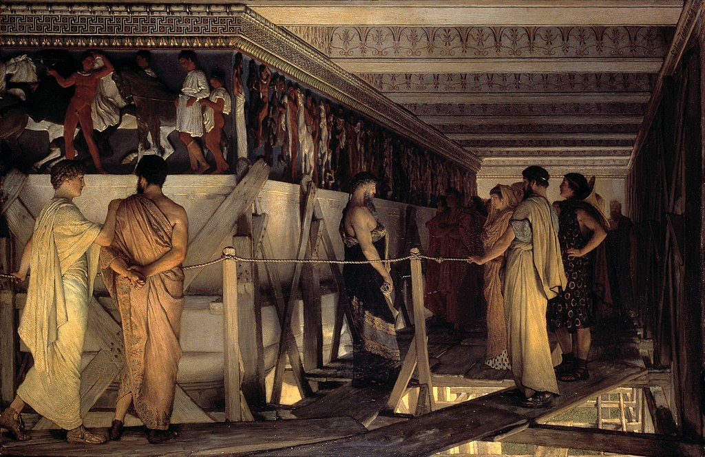
ローレンス・アルマ＝タデマ画『フェイディアスとパルテノン神殿のフリーズ』1868年 - デルフォイのスフィンクス：デルフォイの遺跡には，幾何学的なデザインが施されたスフィンクス像があります．この像は，神秘的な雰囲気を持ち，古代ギリシャの芸術の精神を象徴しています．
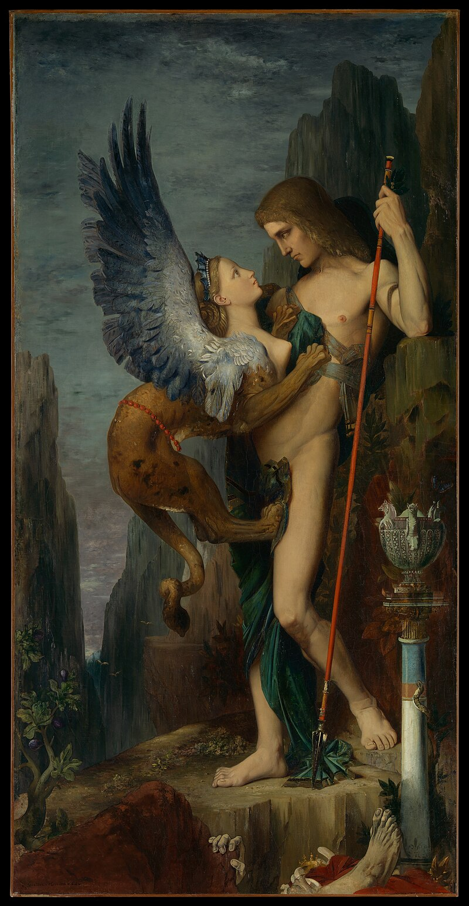
ギュスターヴ・モロー画『オイディプスとスフィンクス』1864年 - アレクサンダー大王のモザイク：アレクサンダー大王のモザイクは，幾何学的なパターンを用いた美しい装飾が施されています．このモザイクは，古代ギリシャの芸術の優れた例証とされています．
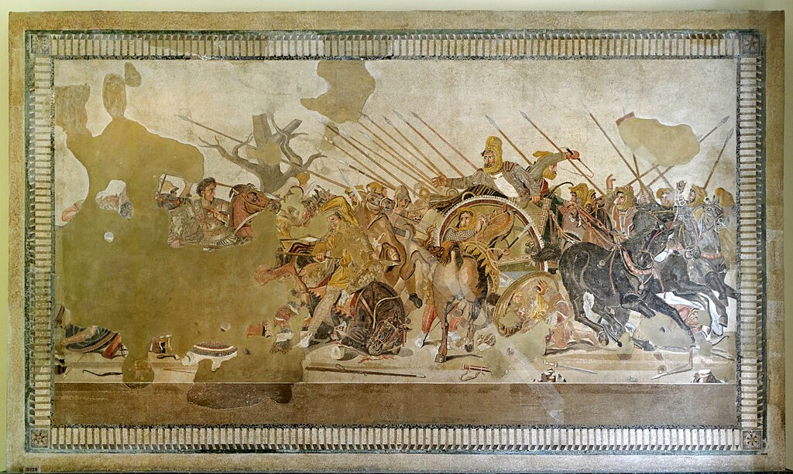
アレクサンダー大王のモザイク．BC 100年頃
中世ヨーロッパ
中世ヨーロッパにおける幾何学的な絵は，主に宗教的な建築物や装飾に見られます．ゴシック建築はその代表例であり，尖塔やアーチ，ステンドグラスなどに幾何学的なデザインが多く取り入れられました．
ゴシック建築の特徴の一つは，リブ・ヴォールトと呼ばれる構造です．これは，交差するアーチによって天井を支える技術で，複雑な幾何学的パターンを形成します．この技術により，建物の内部空間は高く，広く，そして明るくなりました．
ステンドグラスもまた，中世ヨーロッパにおける幾何学的な芸術の一例です．色とりどりのガラス片を幾何学的なパターンに組み合わせ，宗教的な物語やシンボルを描き出しました．これらのステンドグラスは，光を通して美しい色彩を生み出し，教会内部を神秘的な雰囲気に包みました．
さらに，中世の写本装飾にも幾何学的なデザインが見られます．写本の縁取りや装飾文字には，複雑な幾何学模様が描かれ，その精緻さと美しさは驚くべきものです．これらの装飾は，宗教的なテキストをより神聖で価値のあるものとするために用いられました．
リブ・ヴォールト
リブ・ヴォールトは，ゴシック建築における天井の構造技術の一つです．リブ・ヴォールトは，交差するアーチ（リブ）によって天井を支える構造で，複雑な幾何学的パターンを形成します．
リブ・ヴォールトによって，建物の内部空間は高く，広く，そして明るくなりました．また，リブ・ヴォールトは，建物の構造を補強する役割も果たし，その美しさと機能性が見事に融合しています．
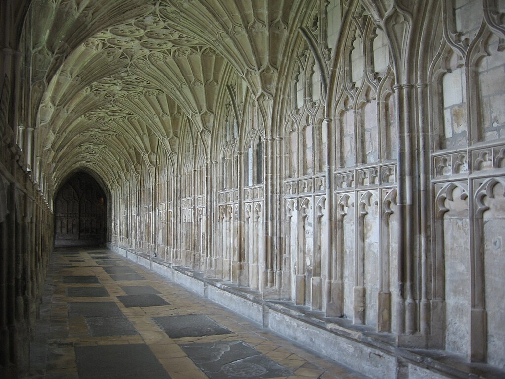ステンドグラス
ステンドグラスは，色とりどりのガラス片を鉛でつなぎ合わせた装飾ガラスのことです．中世ヨーロッパの教会や大聖堂には，ステンドグラスが豊富に用いられており，宗教的な物語やシンボルを描いた美しい作品が多く残されています．
ステンドグラスは，光を通して美しい色彩を生み出し，教会内部を神秘的な雰囲気に包みます．また，ステンドグラスは，文字や模様を描くだけでなく，建物の構造を補強する役割も果たしており，その美しさと機能性が見事に融合しています．
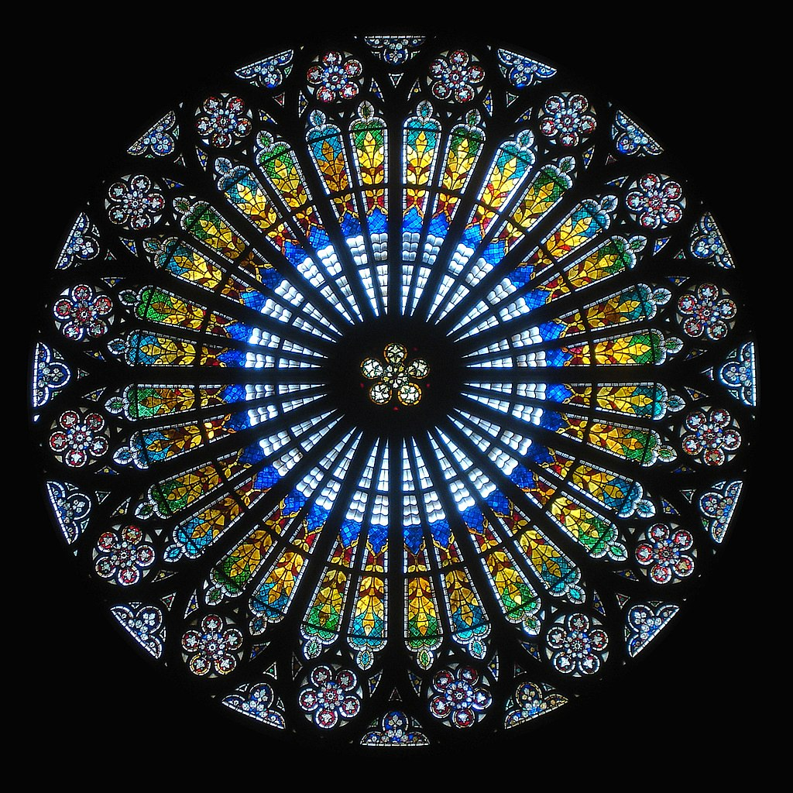写本装飾
中世の写本装飾は，写本の縁取りや装飾文字に幾何学的なデザインが多用されています．これらの装飾は，金箔や鮮やかな色彩を用いて描かれ，その精緻さと美しさは驚くべきものです．
写本装飾は，宗教的なテキストをより神聖で価値のあるものとするために用いられました．また，装飾文字や図像は，読者に物語の重要な箇所を示し，理解を助ける役割も果たしています．
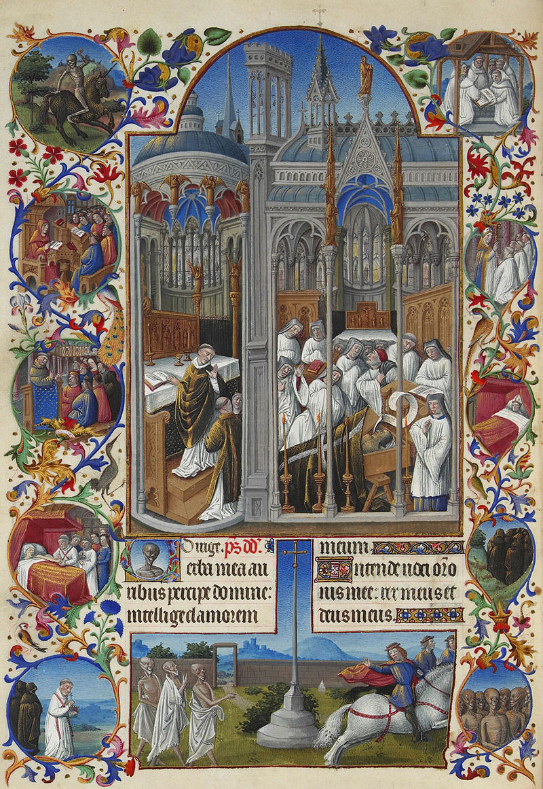ルネサンス期
ルネサンス期における幾何学的な絵は，科学と芸術の融合が特徴です．この時期の芸術家たちは，数学的な原理を用いて，より現実的で調和の取れた作品を生み出しました．
レオナルド・ダ・ヴィンチは，幾何学を駆使して遠近法を発展させました．彼の作品「最後の晩餐」では，消失点を用いて奥行き感を表現し，視覚的なリアリティを追求しました．また，彼の解剖学的なスケッチも，幾何学的な比例に基づいて描かれています．
アルブレヒト・デューラーもまた，幾何学に基づいた作品を多く残しました．彼の著書『測定法教本』では，幾何学的な形状の描き方や，遠近法の理論が詳述されています．デューラーの版画作品には，正確な比例と対称性が見られ，その美しさは高く評価されています．
さらに，ルネサンス期の建築にも幾何学的な原理が取り入れられました．フィリッポ・ブルネレスキは，フィレンツェのサンタ・マリア・デル・フィオーレ大聖堂のドームを設計する際に，幾何学的な技術を駆使しました．このドームは，その巨大さと美しさで知られ，ルネサンス建築の傑作とされています．
このように，ルネサンス期の芸術家たちは，幾何学を用いて新たな表現方法を開拓し，その成果は後世に大きな影響を与えました．
最後の晩餐
レオナルド・ダ・ヴィンチの代表作「最後の晩餐」は，幾何学的な原理を駆使して描かれた絵画です．この作品では，消失点を用いて奥行き感を表現し，人物の配置や構図に幾何学的な法則が取り入れられています．
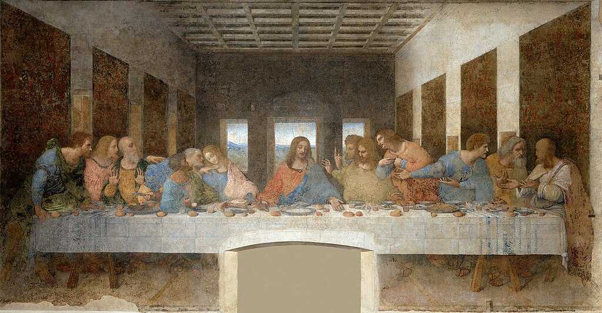アルブレヒト・デューラー
アルブレヒト・デューラーは，幾何学に基づいた作品を多く残した芸術家です．彼の版画作品には，正確な比例と対称性が見られ，その美しさは高く評価されています．
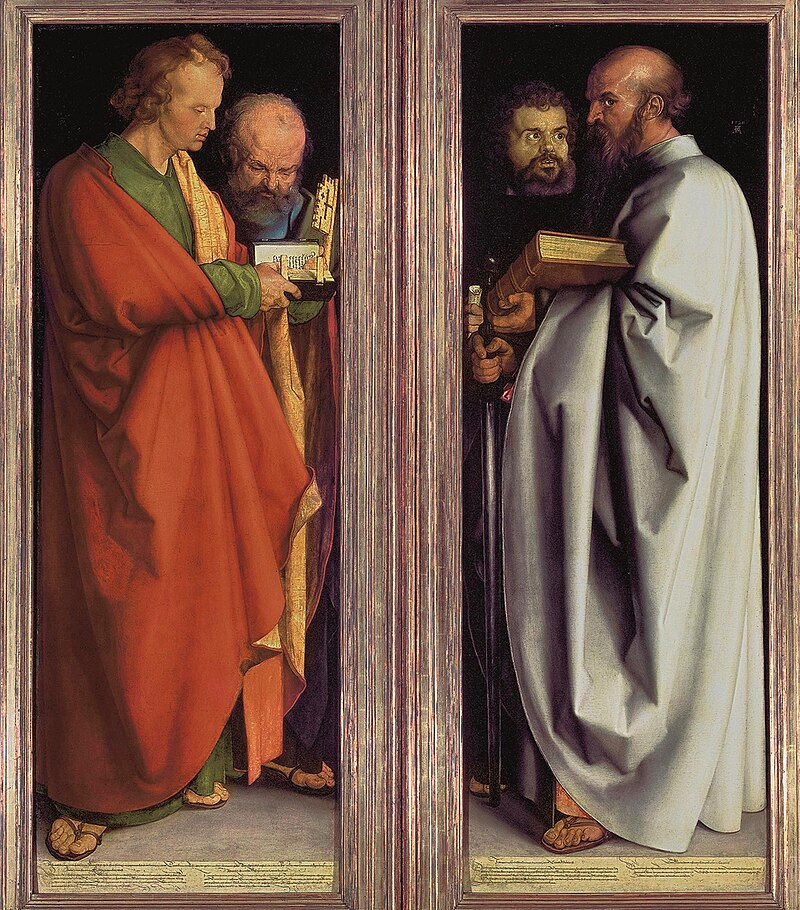フィリッポ・ブルネレスキ
フィリッポ・ブルネレスキは，ルネサンス期の建築家であり，幾何学的な技術を駆使して多くの傑作を生み出しました．特に，フィレンツェのサンタ・マリア・デル・フィオーレ大聖堂のドームは，その巨大さと美しさで知られています．
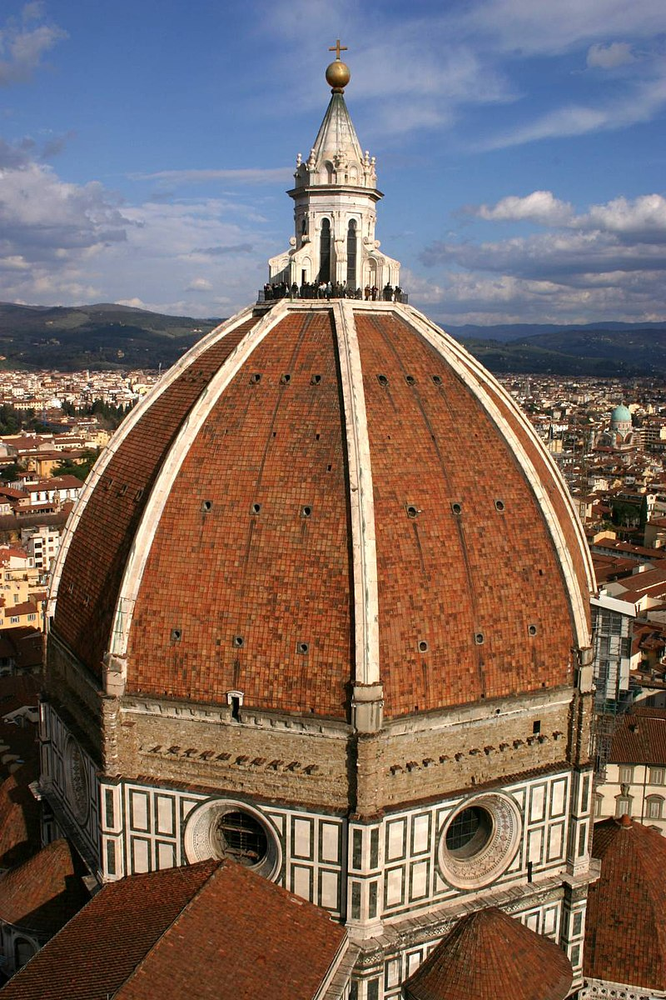{kind=link}
近現代
近現代における幾何学的な絵は，抽象芸術の発展とともに大きな変化を遂げました．カジミール・マレーヴィチは，幾何学的な形状を用いた「シュプレマティズム」を提唱し，シンプルな形と色の組み合わせによって純粋な美を追求しました．彼の代表作「黒の正方形」は，その象徴的な作品です．
ピート・モンドリアンもまた，幾何学的な形状を用いた抽象芸術の先駆者です．彼の「デ・ステイル」運動は，水平線と垂直線，そして基本的な色彩を用いて，視覚的な秩序と調和を表現しました．モンドリアンの作品は，シンプルでありながらも強いインパクトを持ち，現代アートに大きな影響を与えました．
さらに，バウハウスの芸術家たちも幾何学的なデザインを重視しました．ワシリー・カンディンスキーやパウル・クレーは，幾何学的な形状と色彩の関係を探求し，その成果を絵画やデザインに反映させました．バウハウスの理念は，建築や工業デザインにも影響を与え，機能的で美しいデザインの基礎となりました．
現代においては，コンピュータ技術の発展により，幾何学的なデザインの可能性がさらに広がっています．フラクタルアートやジェネレーティブアートなど，アルゴリズムを用いた複雑な幾何学的パターンが容易に作成できるようになりました．これらのデザインは，デジタルアートやアニメーション，建築，ファッションなど様々な分野で応用されています．
カジミール・マレーヴィチ
カジミール・マレーヴィチは，ロシアの芸術家であり，幾何学的な形状を用いた「シュプレマティズム」を提唱しました．シュプレマティズムは，シンプルな形と色の組み合わせによって純粋な美を追求する芸術運動で，その象徴的な作品「黒の正方形」は，その理念を象徴するものとされています．
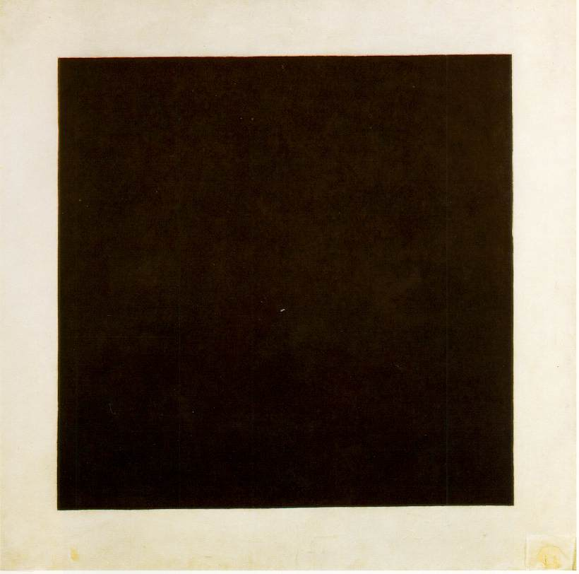ピート・モンドリアン
ピート・モンドリアンは，幾何学的な形状を用いた抽象芸術の先駆者です．彼の「デ・ステイル」運動は，水平線と垂直線，そして基本的な色彩を用いて，視覚的な秩序と調和を表現しました．モンドリアンの作品は，シンプルでありながらも強いインパクトを持ち，現代アートに大きな影響を与えました．

バウハウス
バウハウスは，ドイツのデザイン学校であり，幾何学的なデザインを重視しました．ワシリー・カンディンスキーやパウル・クレーなどの芸術家たちは，幾何学的な形状と色彩の関係を探求し，その成果を絵画やデザインに反映させました．バウハウスの理念は，建築や工業デザインにも影響を与え，機能的で美しいデザインの基礎となりました．
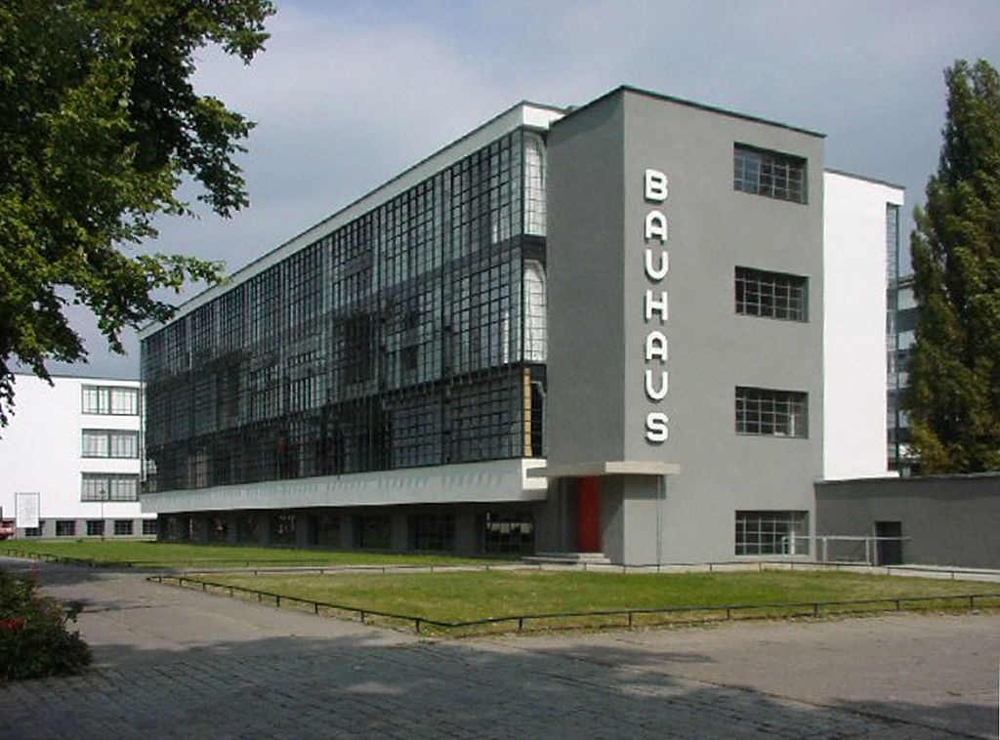フラクタルアート
フラクタルアートは，幾何学的な形状を用いたデジタルアートの一種です．フラクタルアートは，数学的なアルゴリズムに基づいて複雑な幾何学的パターンを生成し，その美しさと複雑さが注目されています．

{kind=link}
ホームへ戻る